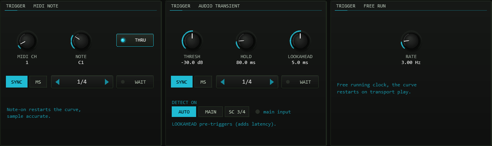
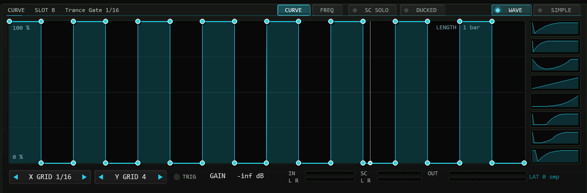
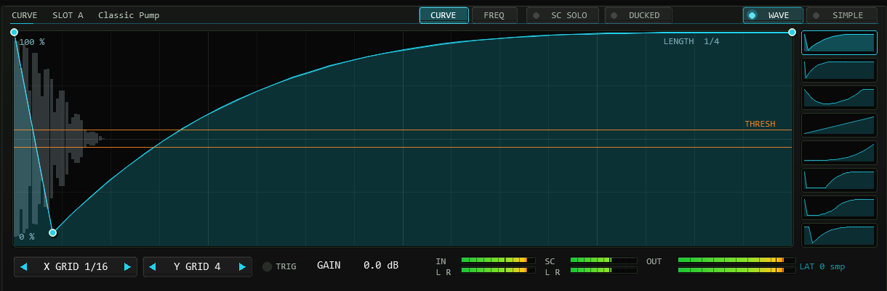
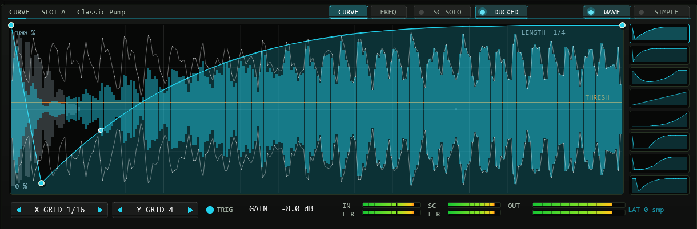
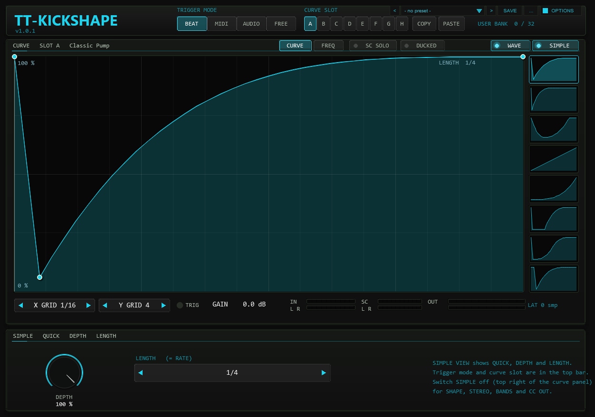
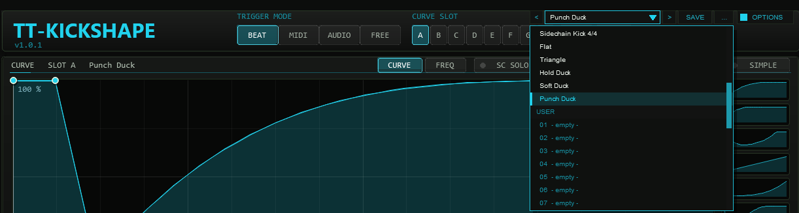
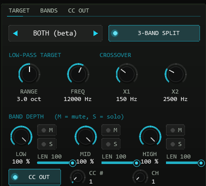
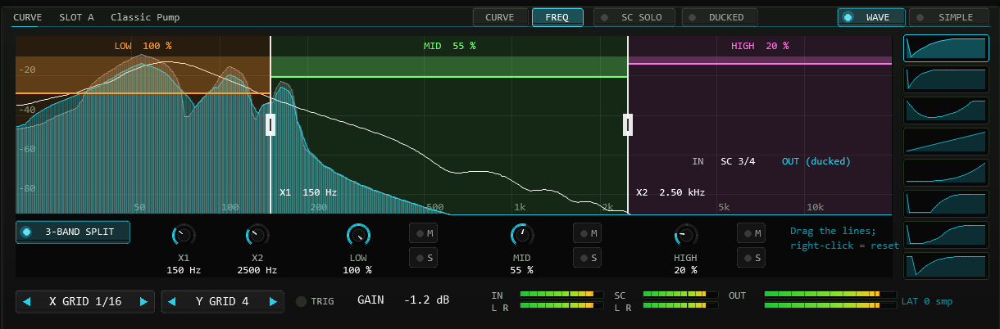
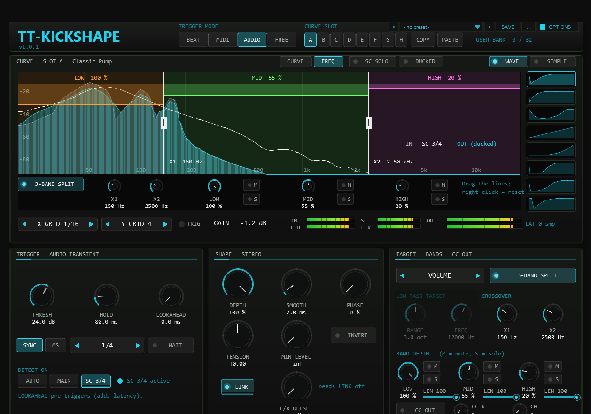
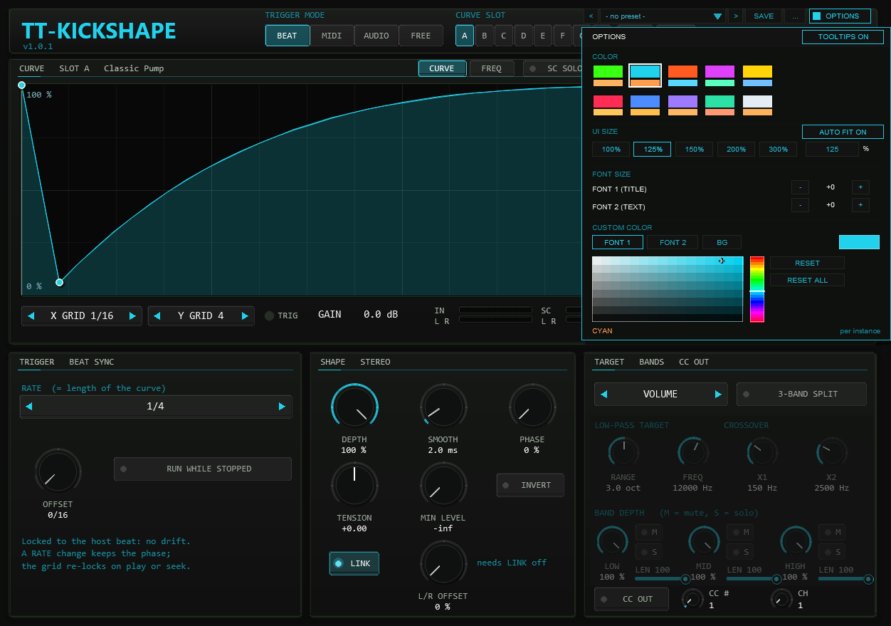

01The concept
A compressor-based sidechain reacts to a signal and needs threshold, ratio, attack and release to approximate the shape you actually want. TT-KICKSHAPE skips the approximation: you draw the volume curve, and the plug-in plays it back every time it is triggered. The result is the same as a perfectly tuned kick sidechain — or a trance gate, an offbeat duck, a swell, a tremolo — with exact timing and no detector in the way.
trigger → curve phase 0..1 → c = curve(phase)
gain = max( 1 − DEPTH · (1 − c'), floor ) c' = c, or 1 − c with INVERT
gain → 1-pole SMOOTH → multiplies the signal (or one band, or a low-pass cutoff)02Quick start
- Insert
TT-KICKSHAPEon the track that should pump (bass, pad, bus). A new instance starts in BEAT mode with the preset Classic Pump on a quarter-note grid: press play and the track ducks on every beat. - Pick another shape in the preset bar in the header (arrows, or click the name for the list) or draw your own: click on the curve to add a point, drag points, right-click a point to delete it, Alt-drag inside a segment for its tension, double-click a segment to reset its tension.
- Set the length with RATE (1/32 … 8 bars, triplets and dotted values). DEPTH scales the effect, SMOOTH rounds sharp edges against clicks.
- For a sidechain from a kick track instead of the beat grid: switch to MIDI (a note-on restarts the curve) or AUDIO (a transient does).
03Trigger modes
| Mode | The curve restarts … | Timing |
|---|---|---|
BEAT | continuously, locked to the host position; one period = RATE | sample-accurate, drift-free (phase re-derived from beat_position every block) |
MIDI | on every note-on that passes the channel / note filter | sample-accurate (measured: 0 samples offset) |
AUDIO | when the transient detector fires | follows the transient; LOOKAHEAD makes the curve start before it |
FREE | continuously, at a free rate in Hz (0.05–20) | restarts on transport play; runs while stopped |
BEAT
RATE is the length of the curve: 1/32T … 1/2 dot (dot = dotted) and
1, 2, 4, 8 bars (bars follow the project time signature). OFFSET
shifts the grid in sixteenth notes, PHASE shifts the start inside the curve.
Changing RATE while playing keeps the phase continuous (measured jump
< 1e-13); the grid re-locks at the next play or seek. When the transport stops the
phase freezes (so the gain stays where it was); RUN WHILE STOPPED
keeps the clock running at the host tempo instead.
MIDI
A note-on restarts the curve at exactly its sample. MIDI CH and
NOTE filter which notes count (ALL = any). Note-offs are ignored: the curve
runs out to its end value and stays there until the next trigger. The curve length is
LENGTH — a note value (SYNC) or milliseconds (MS).
THRU decides whether notes are passed on; controllers, pitch bend and clock
always pass. WAIT chooses what a trigger during a running curve does:
off = restart at once, on = it is remembered and starts exactly when the running curve
ends. Only one trigger is remembered; it is dropped again when WAIT is switched off or the trigger mode changes.
AUDIO
A peak at or above THRESH (−60…0 dB) starts the curve. After a trigger the
detector is locked for HOLD ms and until its 10 ms envelope has fallen
6 dB below the threshold, so a decaying kick cannot retrigger itself. DETECT ON
selects the source: the sidechain pins 3/4, the main input, or AUTO (pins 3/4 as
soon as they carry signal). An audio trigger can only fire when the transient has
arrived — use LOOKAHEAD (0–10 ms) to delay the audio and start the
curve earlier; it reports the delay to REAPER (PDC). Without lookahead the plug-in adds no latency.
FREE
A free-running clock at RATE Hz. The phase restarts at transport play.

04Curve, slots & presets
The editor holds up to 32 points; each segment has its own tension (Alt-drag it up or
down, double-click resets). The grid snaps points in time (X GRID: off, 1/4 … 1/32 of the
length) and level (Y GRID); hold Shift to place a point without snapping.
The vertical line is the playhead. A thin white line shows the effective curve after
TENSION, INVERT, DEPTH and MIN LEVEL. The number under the editor is the real gain in dB
right now.
Slots A–H each hold a complete curve and are saved with the project (they are
part of the plug-in state, so presets you save in REAPER carry all eight). COPY /
PASTE move a curve between slots. Curve edits mark the project as changed and can be undone with REAPER’s undo, one step per mouse gesture. A preset is a built-in curve that is
loaded into the active slot; a star after its name marks a curve you edited since (the star is worked out from the curves again when a project loads, so it survives a reload).
The 22 preset curves are the factory list of the preset bar (next chapter); a new instance fills the slots as listed below the table.
| Preset | Made for | Shape |
|---|---|---|
| Classic Pump | any RATE | steep dive to 6 %, exponential recovery |
| Hard Gate | any | open for the first half, closed for the second |
| Trance Gate 1/16 | 1 bar | 16 alternating steps |
| Triplet Gate | 1 bar | 12 alternating triplet-eighth steps |
| Offbeat Duck | 1/4 | dip on the “and” of every beat |
| Half-Time Swell | 1–2 bars | slow swell, sudden cut |
| Reverse Saw | any | curved swell |
| Sine Wobble | any | cosine, 17 points |
| Fast Pump | 1/4 | very short dive, recovery within 60 % |
| Long Breathe | 1 bar | soft dip and rise |
| Stutter 8ths | 1 bar | 8 short dips |
| Trap Chop | 1 bar | irregular 16-step gate |
| Ramp Up / Ramp Down | any | linear ramps |
| Pluck | any | instant rise, curved decay |
| Saw x2 | 1/2 | two falling ramps per period |
| Sidechain Kick 4/4 | 1 bar | four dips, one per beat |
| Flat / Triangle | any | constant 1 / up and down |
| Hold Duck | any RATE | fast dive, stays down for a quarter of the length, soft recovery |
| Soft Duck | any RATE | fast dive, S-shaped recovery |
| Punch Duck | any RATE | the first 6 % pass untouched, then the dive (keeps the attack) |
Factory presets are code, not saved data: they never overwrite anything you did not load yourself. A new instance fills the slots with Classic Pump, Trance Gate, Sine Wobble, Offbeat Duck, Fast Pump, Reverse Saw, Trap Chop and Sidechain Kick.
QUICK: ducking shapes with one click
The column of eight small tiles right of the editor holds the classic sidechain ducking shapes. Each tile shows its curve; a click loads it into the active slot, exactly like picking the factory preset from the preset bar. From top to bottom: Classic Pump, Fast Pump, Long Breathe, Ramp Up (linear recovery), Reverse Saw (late recovery), Hold Duck, Soft Duck and Punch Duck. All eight are single dips over one curve length, so they work with any RATE or LENGTH. The tile whose shape sits unchanged in the slot is outlined; hover a tile for its name.

WAVE and SIMPLE view
WAVE (top right of the curve panel) draws the waveform of the trigger signal behind the curve: in AUDIO mode the signal that feeds the detector, i.e. the source chosen with DETECT ON (sidechain pins 3/4, the main input, or with AUTO whichever of the two is active at the moment; MAIN or AUTO therefore do not always mean an external sidechain), in the other modes the input. It is folded onto one curve length and smoothed over the passes, so a steady kick pattern shows the kick shape and you can place the recovery of the curve on its tail. The display is scaled to its loudest column. In AUDIO mode an orange THRESH line is drawn on both sides of the mirrored waveform, on the same scale: every peak that reaches the line can start the curve. If the threshold lies above every peak in view, the line sits at the edge and turns faint; lower THRESH until the kick peaks cross it.

SIMPLE switches to a reduced front: the curve editor grows, the QUICK shapes stay at its right, and the bottom panel shows only DEPTH and LENGTH (plus THRESH in AUDIO mode). Trigger mode and curve slot stay in the top bar. Switch SIMPLE off to get SHAPE, STEREO, BANDS and CC OUT back; nothing is lost or reset. The view is saved with the project.
DUCKED (next to SC SOLO in the title row of the curve panel) draws what the shaper does to the signal: the input as a thin white outline, the output after ducking filled in the accent colour, both folded onto one curve length and scaled to the loudest input column. Where the filled shape sinks below the outline, the signal is ducked.

Checking the sidechain: level meters and SC SOLO
The status bar shows an SC level meter (L / R) next to IN and OUT: it reads the sidechain pins 3/4, so you see at once whether the sidechain signal arrives. The meter always reads pins 3/4, even when the detector listens to the main input; SC SOLO and WAVE follow the source the detector really uses. SC SOLO (title row of the curve panel) replaces the output by the detection signal, i.e. the sidechain pins 3/4 (with DETECT = MAIN in AUDIO mode, or when DETECT = AUTO has fallen back to it, the main input), so you can hear exactly what the detector hears. SC SOLO is not saved and is always off after loading a project; while it is on, the output is not shaped. If nothing is connected to pins 3/4 you hear silence.

05Preset bar & user bank

OPTIONS: < name > SAVE .... The name opens the list with the FACTORY and USER sections.The bar loads and saves the whole sound of the instance in one step: all timing, shape, stereo, target, band and detector settings plus all eight curve slots
with their preset names. Not part of a preset: the colour scheme (OPTIONS), the grid snapping of the editor, the MIDI channel / note filter and THRU,
the CC number and channel, RUN WHILE STOPPED and the hidden test parameters.
| Control | Function |
|---|---|
< / > | Previous / next preset: first the 22 factory presets, then the used user slots; wraps around and loads immediately. |
| Name field | Opens the list: FACTORY (22 curves) and USER (32 slots, empty ones show - empty -). Mouse wheel scrolls, click loads. A * behind the name means the state differs from the loaded preset. |
SAVE | Saves the current state into the selected user slot; with a factory preset (or none) selected, into the first free slot. A name box opens (up to 24 characters, default User 07): type, Enter or OK saves, CANCEL or a click outside cancels. |
... | RENAME, COPY (into the next free slot), DELETE (a second click confirms) for the selected user preset, and INIT (factory settings of all preset parameters and the default slot curves). |
A factory preset loads a curve into the active slot and leaves every other setting alone (exactly like the old preset selector). A user preset restores everything, including which slot is active and all eight slot curves.
Where the user bank lives. Plug-ins cannot write files, so the 32 user slots are part of the plug-in state: they are saved with the project, with FX-chain and track-template copies,
and in every REAPER preset of this plug-in (the + button in the FX window toolbar). To take your bank to another project or computer, save a REAPER preset once
(+ → Save preset) and load it there: the whole bank comes with it. Projects saved with earlier versions load unchanged with an empty bank.
Typing names and keyboard focus. REAPER keeps Space for the transport, so type Shift+Space for a blank in a name. Space always starts and stops playback, also while this window has the focus. Depending on your REAPER settings Esc closes the whole FX window; use CANCEL to leave an entry field.
06Shaping the gain
| Control | Range | Function |
|---|---|---|
DEPTH | 0–100 %, def. 100 | gain = 1 − DEPTH · (1 − c). 0 % is bit-exact transparent (tested on noise, with every target). |
SMOOTH | 0–50 ms, def. 2 | One-pole smoothing of the gain, applied last. At 2 ms the gain never jumps more than 0.0104 per sample (48 kHz). |
INVERT | off / on | Mirrors the curve (c' = 1 − c) before the depth, so DEPTH 0 stays transparent. |
PHASE | 0–100 % | Start offset inside the curve (BEAT / FREE: shifts the phase; MIDI / AUDIO: the curve starts this far in). |
TENSION | −1 … +1 | Added to the tension of every segment (result limited to ±1). |
MIN LEVEL | −96 dB (= −inf) … 0 dB | Floor of the gain, applied after the depth: max(gain, floor). 0 dB switches the effect off. |
07Stereo & 3-band split
LINK (default on) gives both channels the same curve. With LINK off,
L/R OFFSET delays the right channel’s curve by that share of the length —
a ping-pong pump; in MIDI/AUDIO mode the run is extended by the offset so the right
channel finishes its curve.
3-BAND SPLIT divides the signal at X1 (40–400 Hz) and X2
(400 Hz–8 kHz) with 4th-order Linkwitz-Riley filters. Each band has its own
DEPTH (multiplied by the global DEPTH) plus M (mute) and S
(solo). The typical use: duck only the bass region under a kick and leave the top untouched.
The low band passes an all-pass at X2, so the three bands add up to a flat magnitude
response (measured ±0.013 dB from 60 Hz to 16 kHz; the null test against the input passed
through the same two all-passes is −135 dB).

FREQ view: the split by frequency
FREQ (title row of the curve panel, next to CURVE) replaces the curve editor by a frequency display from 20 Hz to 20 kHz, in the manner of multiband shaper plug-ins: the live spectrum of the input (grey), of the sidechain pins 3/4 (white line) and of the output after ducking (accent colour), and the three bands as coloured zones (LOW orange, MID green, HIGH pink). In each band a bar falls from the top with the current gain of that band, so you see which band ducks when. Muted bands and bands outside a solo are dimmed.
The two white crossover lines are the split frequencies: drag the line with the mouse to move X1 (40–400 Hz) or X2 (400 Hz–8 kHz); right-click a line to return to 150 Hz or 2500 Hz. The lines keep a distance of at least 1.25 times between X1 and X2. The same values are on the X1 and X2 knobs below the plot, together with 3-BAND SPLIT, the depth of each band and M / S. With the split off the zones stay visible but dimmed, and the audio is unchanged. The FREQ view is only a display: switching it on or off never changes the sound. The setting is saved with the project; the spectrum is only computed while FREQ is shown.


Band LEN: different lengths per band
With 3-BAND SPLIT on, the small LEN knob next to each band depth knob sets how much of the curve that band uses: at 100 % the band follows the whole curve, at 50 % it reads the curve at double speed and is back at the end value after half the length. Use it to duck the highs short and let the bass breathe longer. The editor shows the shortened curves as thin orange (LOW), green (MID) and pink (HIGH) lines. At 100 % everywhere the audio path is bit-identical to earlier versions. LEN only acts on the volume target. Limit: LEN compresses the time of the one shared curve for each band; there is no separate curve per band.
08Low-pass target
TARGET chooses what the curve controls: VOLUME (default),
LP FILTER (shown as LP (beta)) or BOTH. The low-pass is a 12 dB/oct state-variable filter
whose cutoff follows the gain: cutoff = FREQ · 2^(−RANGE · (1 − gain)). At gain 1 the cutoff is
FREQ; a full dip lowers it by RANGE octaves. At gain 1 the filter is blended out exactly
(bit-exact). Beta: the target is verified against the analytic filter response (within 0.1 dB at
1 kHz cutoff), but not yet tuned by ear. With the split on, the low-pass acts on the summed output.
09MIDI CC output
CC OUT sends the current curve value (after DEPTH, INVERT, MIN LEVEL, before SMOOTH)
as a controller, 0–127, on CC # / CH. A value is sent only when it changes
(at most one per block), so a constant curve sends nothing after the first message. Use it to
modulate a synth filter or a send from the same curve that ducks the volume — the LFOTool
principle. Measured: value = round(127 · curve) exactly, position and value identical at the
receiver. MIDI that enters the plug-in still passes through.
10Latency, routing & lookahead
- The plug-in adds no latency (BEAT, MIDI, FREE; AUDIO with LOOKAHEAD 0). With LOOKAHEAD > 0 in AUDIO mode the audio is delayed by that time and the plug-in reports it, so REAPER realigns everything: the curve then starts 0–10 ms before the transient. In the other modes LOOKAHEAD does nothing. LOOKAHEAD is not meant to be automated: every change clears the delay and re-aligns the delay compensation.
- When a LOOKAHEAD change takes effect: the delay and the latency reported to REAPER always change
together, and a change applies at once – whether it comes from the parameter, automation, a preset, a project
load or from the LOOKAHEAD knob and the TRIGGER MODE buttons on the plug-in front. No playback start is needed;
REAPER takes the new latency over while stopped, while playing and in the render. Only when REAPER is not processing
the track at all (for example with “Run FX when stopped” switched off) does a change made on the
front wait for the next playback start; until then the
LATreadout is shown in the accent colour and the AUDIO panel saysNew LOOKAHEAD applies at next play.The latency for a given setting is the same as before. - Sidechain pins: the plug-in has four inputs; pins 3/4 are the sidechain. Send the trigger track to
channels 3/4 of the plug-in’s track (set that track to 4 channels), then pick
DETECT ON: SC 3/4(or AUTO). - Example: bass as the target, kick as the trigger. Put TT-KICKSHAPE on the bass track and set that track to 4 channels. On the kick track add a send to the bass track and route its audio to channels 3/4 (the kick keeps playing to the master as usual). In the plug-in choose
TRIGGER MODE: AUDIOandDETECT ON: SC 3/4. The SC meter in the status bar now moves with every kick; SC SOLO lets you hear exactly the signal the detector hears (the bass is silent while it is on); switch it off again. With WAVE on, the orange line showsTHRESHagainst the kick peaks. Start from a QUICK shape, then adjustLENGTHandDEPTHuntil the bass makes room for the kick. - MIDI: feed the note-ons from a MIDI track (MIDI-only send) or the track’s own MIDI input. In MIDI mode, notes are removed
from the output unless
THRUis on.
11Controls
All sliders are hidden by design; the drawn front (1000×700 design grid, redrawn at the selected UI SIZE) is the interface.
Knobs: drag vertically, Shift = fine, mouse wheel (one notch = one step on selectors such as RATE and on the small whole-number knobs OFFSET, MIDI CH, NOTE, CC # and CH; 2 % of the range on all other knobs, e.g. about 400 Hz on FREQ or 80 ms on LENGTH, rounded to the knob’s resolution), right-click / double-click / Ctrl-click = default.
The front only writes a parameter when you operate it: an open window never rounds or rewrites automated values. Every change you make on the front can be undone with REAPER’s undo — curve edits (one undo step per mouse gesture), PASTE, QUICK tiles and preset loads included.
Hover any control for a tooltip (it appears after a short moment). OPTIONS > TOOLTIPS ON / OFF switches the tooltips off per instance; the setting is saved with the project.
| Area | Controls |
|---|---|
| Header | Trigger mode BEAT / MIDI / AUDIO / FREE · slots A–H · COPY / PASTE · preset bar (< name > SAVE ...) · OPTIONS (COLOR, style, TOOLTIPS) |
| Editor | Curve · QUICK tiles (8 ducking shapes, click loads) |
| Editor strip | X GRID, Y GRID · TRIG LED · GAIN readout · IN / OUT meters (L, R) · latency in samples |
| TRIGGER | BEAT: RATE, OFFSET, RUN WHILE STOPPED · MIDI: MIDI CH, NOTE, THRU, SYNC/MS + LENGTH, WAIT · AUDIO: THRESH, HOLD, LOOKAHEAD, DETECT ON, LENGTH, WAIT · FREE: RATE (Hz) |
| SHAPE / STEREO | DEPTH, SMOOTH, PHASE, TENSION, MIN LEVEL, INVERT, LINK, L/R OFFSET |
| TARGET / BANDS / CC OUT | TARGET, 3-BAND SPLIT, RANGE, FREQ, X1, X2 (also in the FREQ view), LOW / MID / HIGH depth with M and S, CC OUT, CC #, CH |

OPTIONS in the header, then a swatch. A click outside the box closes it.Options / Color. The OPTIONS button at the right end of the header (right of the preset bar) opens the box; COLOR offers ten schemes:
ACID, CYAN, ORANGE, MAGENTA, YELLOW, RED, BLUE, VIOLET, MINT and ICE. A scheme changes the accent colour (curve, knob rings, active buttons, LEDs, meters),
the second colour and, for RED to ICE, the slightly tinted panel background of the whole front at once. The choice applies per plug-in instance, is saved with the project
and with FX-chain copies, and is not touched by preset or slot changes (it is not part of a preset). The factory colour is CYAN. The colour is stored in the hidden parameter 58
(UI Color, 0–9).
Style: font size and custom colours. Below the swatches the box carries the style controls: FONT SIZE scales the two font slots in steps of about 8 % (range -4–+8) — FONT 1 is the large title font, FONT 2 is all other text; the current step is shown between the - and + buttons. The colour picker assigns a custom colour to FONT 1, FONT 2 or the background BG: pick the target, then drag in the hue strip and the saturation/value field — every change applies live while you drag, and BG derives the panel, border and knob colours from the spacing of the active scheme. RESET restores the scheme value of the selected target, RESET ALL restores everything. If a custom text colour drops below a contrast of 3:1 against the background, the box shows a small warning. All style settings apply per instance, are stored with the project, the FX chain and REAPER presets — and are not part of the factory or user presets of the preset bar.
Font steps above +2: the TT-KICKSHAPE front has a fixed grid of rows; from step +3 on, texts would run into their neighbours. Since v0.7.0 the front therefore draws with at most +2 for FONT 1 and FONT 2, even if OPTIONS is set higher (the setting itself is kept and shown as chosen). For a bigger front use UI SIZE, which scales everything together.
12Hidden readouts
Sliders 46–56 (Q IDX … Q CMD) are a test interface used by the regression suite (phase, gain, trigger and CC
logs, slot checksums); PRESET LOAD (slider 44, 0–22) is a momentary parameter for automation: 1–22 loads factory curve 1–22 (the order of the factory list) into the active slot and
it jumps back to 0; 0 does nothing. The Q CMD commands that write the user bank (save, load, INIT) only run while a test script has released them, so host automation cannot overwrite the bank. Slider 58 (UI Color) stores the colour scheme of the OPTIONS box. None of the other sliders are needed in normal use.
13In practice
- Kick sidechain on the beat: BEAT, RATE 1/4, preset Classic Pump or Sidechain Kick 4/4 (RATE 1 bar), DEPTH 70–100 %, SMOOTH 1–3 ms.
- Kick sidechain from the actual kick: MIDI mode with the kick’s MIDI on the sidechain track, or AUDIO mode with the kick routed to pins 3/4, LENGTH 1/4 or 300 ms.
- Trance gate: BEAT, 1 bar, Trance Gate 1/16, MIN LEVEL −inf, SMOOTH 1 ms; L/R OFFSET 25 % with LINK off for stereo movement.
- Duck only the low end: 3-BAND SPLIT on, LOW 100 %, MID 30 %, HIGH 0 %, X1 around 200–300 Hz.
- Modulate a filter with the same curve: CC OUT on CC 74, map it in your synth.
Curves for typical jobs
Six jobs, one curve each — every name is in the preset bar, and all but the Trance Gate are QUICK tiles too:
| Job | Curve | Setting |
|---|---|---|
| Short kick | Fast Pump | RATE 1/4 — the dive is over by 60 % of the length, so the track is back up before the next beat. |
| Long kick | Classic Pump | RATE 1/2 — the exponential recovery follows the kick tail over the whole length. |
| Breakbeat | Punch Duck | AUDIO mode, kick on pins 3/4 — every syncopated hit retriggers the curve, and the first 6 % passing untouched keep the attack (Soft Duck for a gentler push). |
| Vocal gate | Trance Gate 1/16 | RATE 1 bar, MIN LEVEL −inf, SMOOTH 1 ms — the chopped-vocal sound. |
| Pad pump | Long Breathe | RATE 1 bar — soft dip and slow rise, a pad breathes instead of ducking. |
| Sub tight | Fast Pump | 3-BAND SPLIT on, LOW 100 %, MID 30 %, HIGH 0 %, X1 around 200–300 Hz — only the low band ducks, the kick stays audible. |
14Troubleshooting
- The gain stays low while the transport is stopped — BEAT freezes the phase; enable
RUN WHILE STOPPEDor use FREE. - Nothing happens in MIDI mode — check the channel / note filter (ALL), that notes actually reach the track, and that
MIDI CHcounts channels 1–16. - AUDIO mode fires too often or never — raise or lower
THRESH, raiseHOLD; with a sidechain send useDETECT ON: SC 3/4. - Clicks on hard edges — raise
SMOOTH(1–3 ms is usually enough). - Gate presets look rounded — the editor draws the drawn points; the playback curve is an 8192-step table, so an edge is up to 0.012 % of the length wide.
- CPU: measured by rendering 48 s of stereo noise offline in REAPER (rough guide, one core of a desktop PC), the shaper costs about 0.3 % of a core with BEAT or AUDIO volume shaping, about 1 % with the 3-band split, and up to about 2 % with the split and the low-pass target on both channels. The FREQ view calculates its spectrum (three FFTs of 4096 points) in the interface thread, and only while it is shown; the audio thread writes the three ring buffers and, while the view is open, copies them once per interface frame for the display. Real-time measurements with very small audio blocks are not part of these figures.
- With audio blocks of 64 to 256 samples a curve or TENSION change reaches the audio after about 12 ms, because the curve is baked in small steps; the old curve keeps playing until then, so there is no click. Constant automation of TENSION can make the curve lag slightly behind the knob at these block sizes.
- The three bands do not sum to the input — expected, see “good to know”: the sum is an all-passed copy (flat magnitude).
15UI Size & Saved Options
Updated in v0.6.2. New instances open at 125% UI size for clearer text. The controls and text are redrawn at the selected size; the colour scheme and background retain their appearance.
Open OPTIONS and choose UI SIZE: 100% / 125% / 150% / 200% / 300%, or click the percentage field and enter a whole number from 25 to 400. Enter or a click outside the field applies it; Escape cancels the edit. Values outside the range are limited to the nearest supported value.
AUTO FIT. When you drag the edge of the FX window, the front rescales to the new window size (the largest whole percentage that shows the whole front, 25 to 400 %) and the scrollbars disappear. The UI SIZE buttons and the percentage field still set a fixed size, which stays until you change the window again. AUTO FIT ON / OFF in the UI SIZE row of OPTIONS switches the rescaling off for this instance; the setting is saved with the project. Switching it on fits the front to the current window at once.
If the enlarged front exceeds the host window, use the horizontal and vertical scrollbars to reach every control. The mouse wheel over a scrollbar moves that view. OPTIONS stays visible at the upper right. You can also enlarge the REAPER FX window to show more of the front.
All OPTIONS settings are saved per instance: UI size, colour scheme, title and text font sizes, custom title/text/background colours, colour-picker target, and TOOLTIPS ON / OFF. Closing and reopening the FX window keeps them; saving and reopening the project restores them. They also travel with FX chains and native REAPER FX presets. Save the project to keep changes between sessions.
The sound presets in the plugin's own preset bar retain the instance's appearance settings. Older projects and style blocks remain readable; projects that predate UI SIZE use the new 125% default.